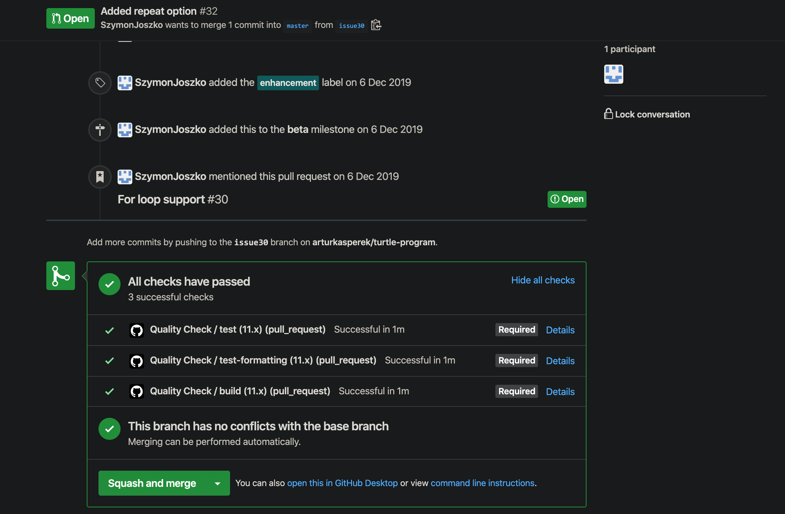
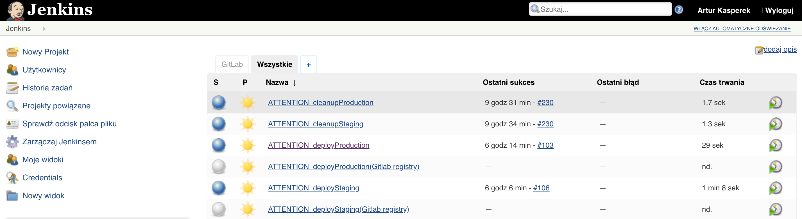
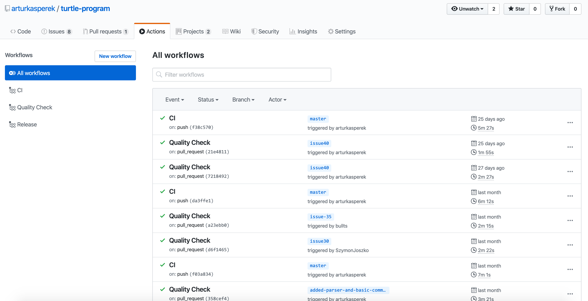
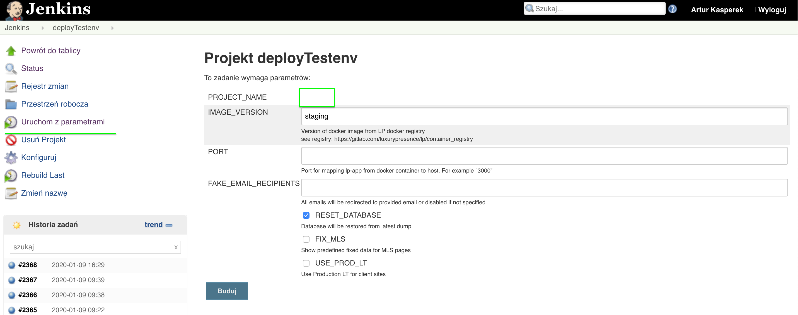
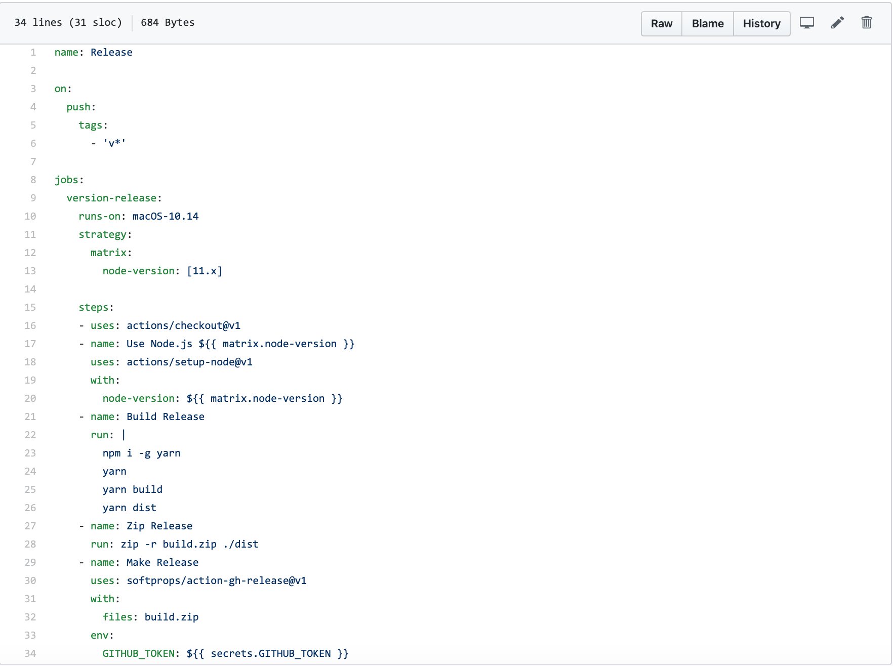
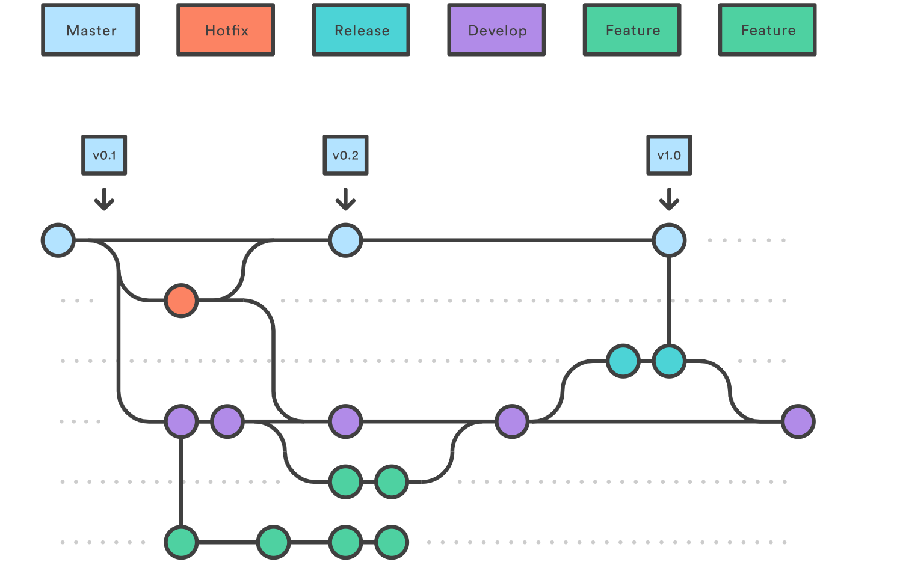
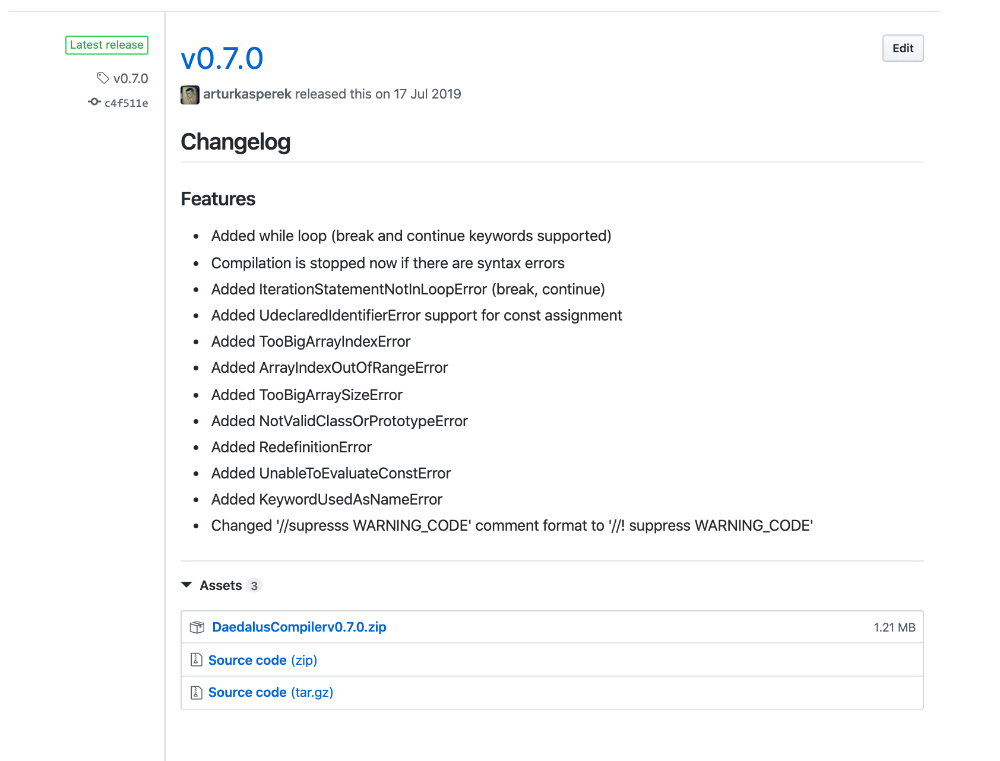

Automatyzacja stosowana dla programistów
Artur Kasperek
O mnie
- programista webowy JS
- członek teamu tworzącego 'Dzieje Khorinis'
- współtwórca kompilatora Daedalus do gry Gothic
- pasjonat automatyzacji
- 🏊 + 🚲 + ❄️️ = ♥️
Kiedyś to było ...
- wymagania userów mało zmienne
- względnie niewielka moc komputerów
- komputery używane głównie w korpo
- internet dopiero powstaje, co implikuje, że ...
- ... outsourcing IT małopopularny
- ... praca zdalna trudna w realizacji
Dziś
- mamy szybki internet
- mamy mocne komputery 🚀
- komputer jest dostępny dla każdego
- spędzamy przed nim często więcej niż połowę dnia, co powoduje, że ...
- ... zapotrzebowanie na software jest ogromne
- ... zapotrzebowanie na programistów jest ogromne
- ... ludzie oczekają ciągłych zmian w softwarze
Co daje automatyzacja procesów IT ?
- specjalista nie traci czasu na rutynowe zadaniach
- mniejsze prawdopodbieństwo popełnienia błędu
- możliwość wprowadzenia nowoczosnego workflow dla developerów
Przykłady rzeczy które można zautomatyzować
- backup bazy danych
- synchronizacja danych między środowiskiem produkcyjnym a testowym
- budowanie aplikacji i wysyłanie na serwer produkcyjny
- audyt wydajnościowy aplikacji
- odpalanie testów przed mergowaniem kodu
Co to jest Continues Integration (CI)?

Przykład CI
Jenkins - popularny niegdyś serwer CI (gdzieniegdzie nadal 😃 )
GitHub Actions, CircleCI - nowsze CI, trigerrowane tylko przez eventy na GitHubie
Co to jest Continues Delivery ?

CD w kilku słowach
"Ciągłe dostarczanie to praktyka programistyczna, gdzie oprogramowanie jest budowane w taki sposób, że może ono zostać opublikowane na środowisku produkcyjnym w dowolnej chwili." - Martin FowlerJenkins, Github Action, CircleCI - służą też do CD
Jenkins - gdzie lepiej się nada ?
Github Actions - przykładowa konfiguracja
Docker - CI/CD best friend
Ale dlaczego ?

Git Workflow - dlaczego jest taki ważny?
Dlaczego wersjonujemy kod?
Podsumowanie
- CI - pozwala sprawdzać jakość zmian programisty
- CD - pozwala na ciągły deploy aplikacji
- Git Workflow - "framework" który definiuje zdrowy flow na GITcie
- Jenkins - tool self hosted do CI/CD, z możliwością manualnego triggerowania zadań + schedulerem
- Github Actions, CircleCI, Gitlab CI - toole do CI/CI, triggerowane przez akcje które dzieję się na GITcie